ESG技术实现文档
1 引言
ESG（环境、社会与治理）是评估企业可持续发展和社会责任的重要指标。它涉及到企业在环境保护、社会公益和公司治理方面的表现。近年来，ESG因素在投资决策、企业管理和公众评价中的重要性越来越大。为了更好地了解企业的ESG表现和评估其可持续性，本团队将提供一种定量化的ESG评估结果，帮助投资者更好地进行投资决策。只有通过对企业的ESG表现进行充分的了解和评估，投资者和企业才能做出更明智、更可持续的决策，实现更好的商业和社会效益。
本文档旨在介绍花旗杯比赛中ESG赛道的作品的技术实现细节，包括需求分析、设计、测试、用户手册、源代码、可执行文件或演示等部分。我们的目标是为读者提供全面而清晰的技术细节，帮助其深入理解该作品的实现原理和使用方法。本文档适用于所有对ESG评估有兴趣的投资者和开发人员。如果您需要更多的帮助或有任何疑问，请随时联系我们的开发团队。
2 需求分析
ESG本地宝平台的主要用户是对ESG投资理念有一定认识并且有一定投资经验的投资者，这些投资者可能需要以下的需求：
- 1. 全面、客观的ESG评价信息：投资者需要获取到全面、客观的ESG评价信息，以帮助他们做出更好的投资决策。平台提供了ESG评分查询功能、结合地方舆情和环境报告的修正ESG指标查询功能、查询主流评级机构的ESG评级数据和企业本地化等功能，为投资者提供全面、客观的ESG评价信息。
- 2. 可靠的ESG投资建议：投资者需要获取到可靠的ESG投资建议，以帮助他们做出符合ESG投资理念的投资决策。平台提供了ESG因子模型构建和个性化投资组合管理功能、ESG本地宝指数等功能，为投资者提供可靠的ESG投资建议。
- 3. 方便、易用的平台操作：投资者需要一个方便、易用的平台来获取ESG评价和投资建议。平台需要提供简洁明了的界面，方便投资者进行查询和操作。
- 4. 及时的数据更新：投资者需要及时获取最新的ESG评价和投资建议信息，以帮助他们做出更及时的投资决策。平台需要及时更新数据，保证投资者获取的信息是最新的。
- 5. 安全可靠的数据保护：投资者需要一个安全可靠的平台来保护其个人数据和交易数据的安全。平台需要采取严格的数据保护措施，保护投资者的数据安全。
3 产品设计
3.1. 产品目标
ESG本地宝是一个综合性ESG投资平台，旨在为广大ESG投资方提供更多ESG信息和投资实践选择。该平台包括ESG主流指标查询、结合地方舆情和环境报告的修正ESG指标查询、因子模型构建和个性化投资组合管理等多种功能，为投资者提供更全面的ESG投资服务。
ESG本地宝选取商道融绿、wind等国内主流评级机构近几年的ESG评级数据，通过加权平均得出各企业的ESG综合得分。同时，平台采用自然语言处理技术从上市公司社会责任报告等相关公告中提取“双碳”、“扶贫”、“乡村振兴”等相关主题词，并根据企业是否涉及该主题及主题词频数评判企业对所在地的环境治理、脱贫攻坚等的贡献。根据贡献程度对企业ESG综合得分进行修正，最终得到ESG本地宝评分。ESG本地宝评分综合了各类评级机构的评级特色并弥补了现有评级体系的不足，能够更加全面地反映各企业的ESG表现。
除了ESG评分，ESG本地宝还构建了包含ESG因子的四因子模型，提供用户考虑ESG因素的企业估值，方便投资者进行符合ESG投资理念的投资决策。此外，平台还以沪深300成分股为样本区间，筛选出ESG本地宝评分排名前10%的股票，构建了ESG本地宝指数，年度调仓，能够为投资者提供更全面的投资建议。通过市场回测，ESG本地宝指数收益可观，在近五年大部分时候能够跑赢沪深300。
此外，ESG本地宝平台还提供了查询当下主流评级机构的ESG评级数据和企业本地化等功能，方便投资者对比各评级机构的评级数据，做出更好的投资选择。综上所述，ESG本地宝平台是一个综合性的ESG投资平台，为投资者提供了全面、可靠的ESG评价和投资建议。
3.2. 产品功能
ESG本地宝的功能主要包括企业ESG评分查询服务、ESG相关资讯汇总和一款人工智能小助手。
其中，企业ESG评分查询服务允许用户输入企业代码或名称来查询该企业的ESG得分评估、近几年ESG评分变化等信息。ESG相关资讯汇总模块中集成了当前几大主流ESG评估平台以供用户参考。
3.3. 产品结构
ESG本地宝产品结构包括主页面、ESG投资页面、技术文档、关于团队和智能小助手。
4 产品测试
4.1. 功能测试
1. 对ESG评分查询服务进行功能测试，包括输入企业代码或名称查询企业的ESG得分评估和变化信息，并验证查询结果的准确性。
2. 对ESG相关资讯汇总模块进行功能测试，包括验证平台集成的当前几大主流ESG评估平台的可用性和内容更新情况。
3. 对人工智能小助手进行功能测试，验证其响应速度、正确性和自然语言处理能力。
4.2. 兼容性测试
1. 在不同的操作系统和浏览器下测试主页面和ESG投资页面的兼容性，包括检查页面元素的显示和布局是否正常。
2. 在不同的设备上测试产品的响应式设计，包括检查页面元素是否能够适应不同设备的屏幕大小。
4.3. 安全性测试
1. 针对输入企业代码或名称查询企业的ESG得分评估和变化信息进行SQL注入、跨站脚本攻击和数据篡改等安全性测试，确保输入数据的安全性。
2. 针对人工智能小助手进行安全性测试，包括检查是否存在代码注入和跨站脚本攻击等安全漏洞。
4.4 性能测试
1. 针对ESG评分查询服务和ESG相关资讯汇总模块进行性能测试，包括验证查询和显示结果的响应速度和准确性。
2. 针对智能小助手进行性能测试，包括验证其响应速度和负载能力。
4.5. 用户体验测试
1. 针对主页面和ESG投资页面进行用户体验测试，包括检查页面的易用性、信息清晰度和导航设计是否符合用户需求。
2. 针对人工智能小助手进行用户体验测试，包括检查其是否能够快速、准确地解决用户问题并提供良好的用户体验。
5 用户手册
5.1 产品说明
5.1.1 产品愿景
本产品希望用一种定量化的ESG评估结果，帮助用户识别可持续发展能力较强的优秀企业、防范环境与社会风险，从而更好地进行投资决策。对于引导绿色投资、完善绿色金融体系，助推绿色和可持续发展，也将起到重要的作用。
我们致力于打造国际一流的绿色金融评级体系，并积极开展绿色金融领域的前瞻性研究，进一步健全国内企业环境和社会风险评估体系的需求体系，推进国内ESG的研究。
5.1.2 产品受众
① 投资主体：需要进行投资，关注ESG并认同ESG理念的投资者，包括投资公司（PE，VC及其他基金公司等），私人投资者，本项目能为关注可持续发展的投资者提供了资产配置的依据，能发挥引导绿色投资的作用。
② 研究主体：国内进行ESG理论研究的学者专家，各类行研、战略研究者，有助于ESG主题在中国的发展。
③ 各类企业主体：时刻关注ESG主题，特定行业遵守ESG标杆性企业发展，努力遵循ESG相关标准。
④ 市场监管主体：国家以及监管局等，能够指导产业风向标，引导全社会产业的健康绿色发展，本项目能为监管者判断相关行业的可持续发展变化走势，以及制定相应的行业政策导向提供参考。国家政府关注企业的污染物排放、环保信息披露程度、环保违规处罚及重大安全事故等指标在兼顾环境、公司治理和社会责任三个维度同时，结合中国所处发展阶段及环保问题突出实际情况，制定国家发展战略。
⑤ 信用借贷主体：银行等信用主体可以借此估计企业的可持续发展能力并给予帮助和扶持，评价结果对银行识别客户和引导可持续投资均具有较好的应用价值。
5.2 功能说明
5.2.1 主页
5.2.1.1 页顶导航栏
用户可以点击页顶导航中的栏目进入下一级页面，其中点击 Logo 会返回首页。文档、关于、和登录按钮放在右侧。
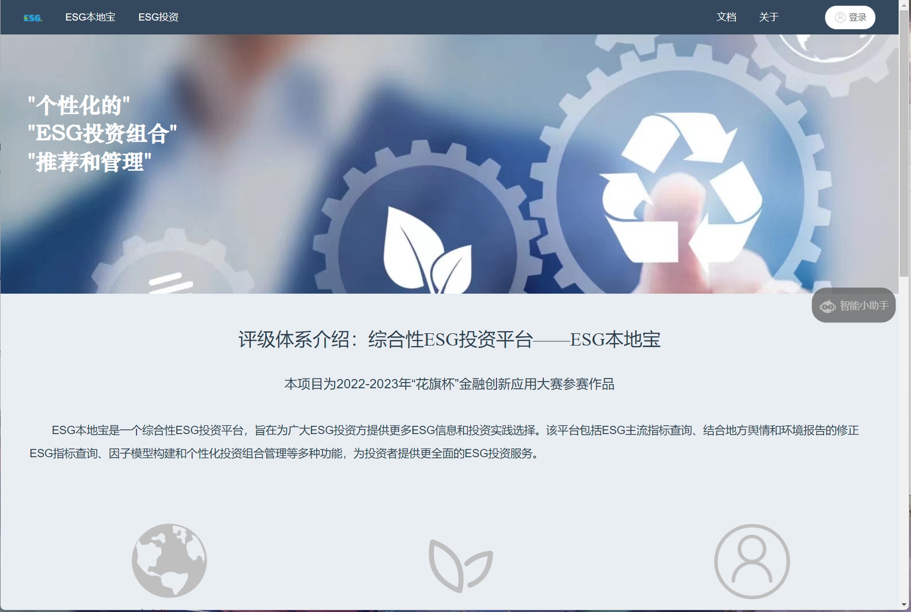5.2.1.2 智能小助手
点击位于主页右边的小助手，即可与 OpenAI 的 chatGTP 进行对话。
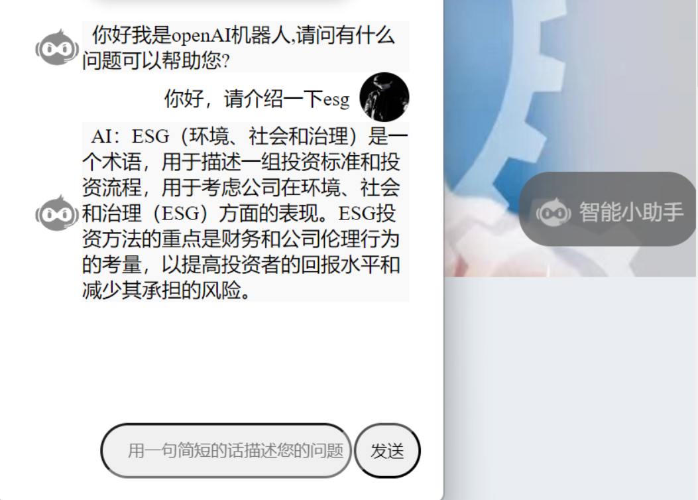5.2.1.3 ESG权威评级汇总
点击“more”即可跳转到对应 ESG 评级的网站，共有 8 个，并附上概要介绍。
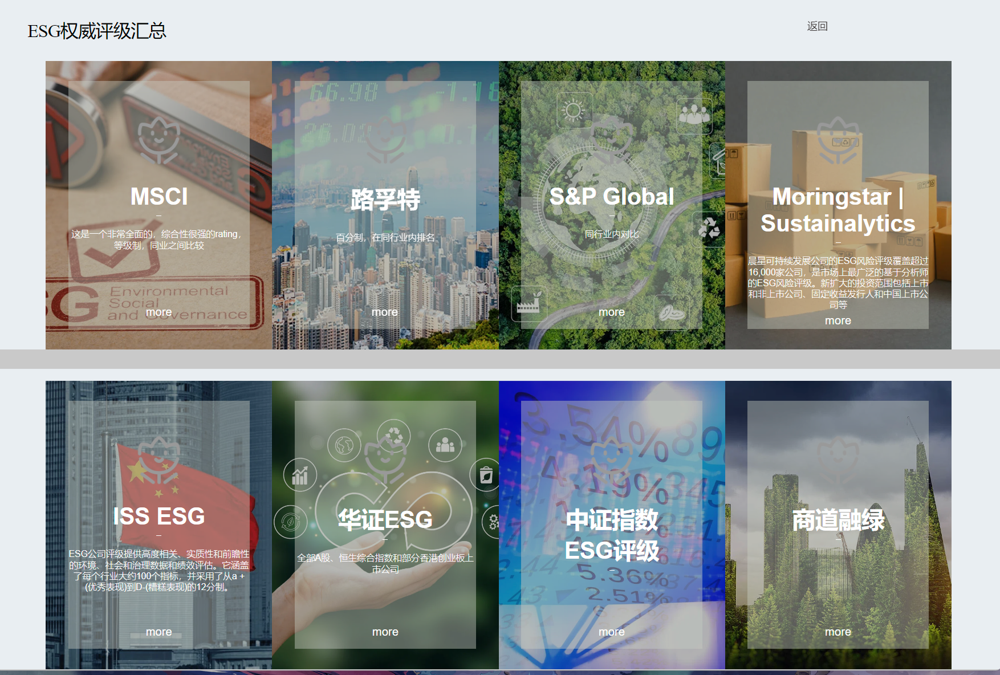① MSCI 是一个非常全面且综合性很强的 rating，用于等级制、同业之间比较。
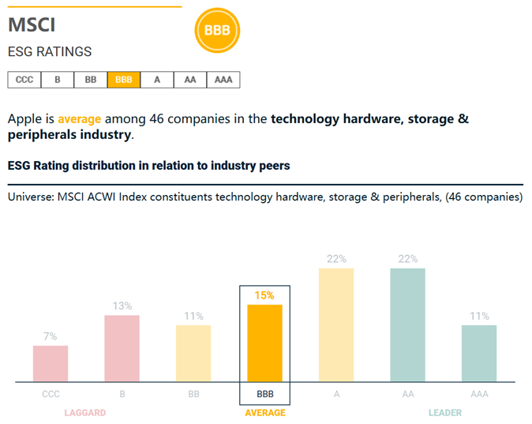② 路孚特，采用百分制，主要是在同行业内排名。
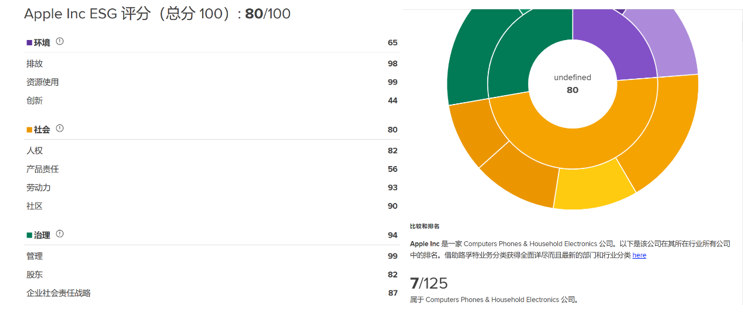③ S&P Global，同行业内对比。
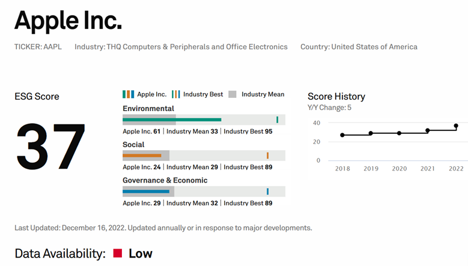④ Morningstar|Sustainalytics 晨星可持续发展公司的ESG风险评级覆盖超过16,000家公司，是市场上最广泛的基于分析师的ESG风险评级。新扩大的投资范围包括上市和非上市公司、固定收益发行人和中国上市公司，允许投资者支持多元化的投资策略。
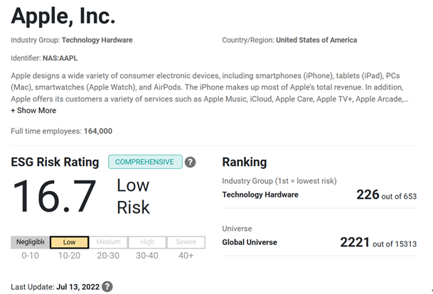⑤ ISS ESG 公司评级提供高度相关、实质性和前瞻性的环境、社会和治理数据和绩效评估，它涵盖了每个行业大约100个指标，并采用了从 a+(优秀表现)到 D-(糟糕表现)的12分制。
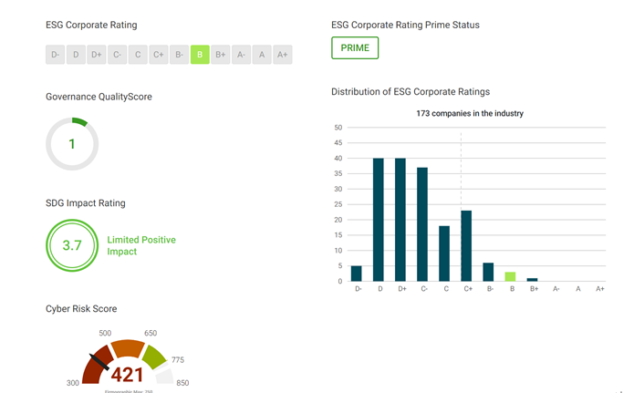⑥ 华证 ESG，覆盖全部A股、恒生综合指数和部分香港创业上市公司。
⑦ 中证指数提供 ESG数据库、ESG跟踪分析报告、ESG指数、ESG因子、个股ESG尾部风险预警，覆盖全部A股和港股上市公司。
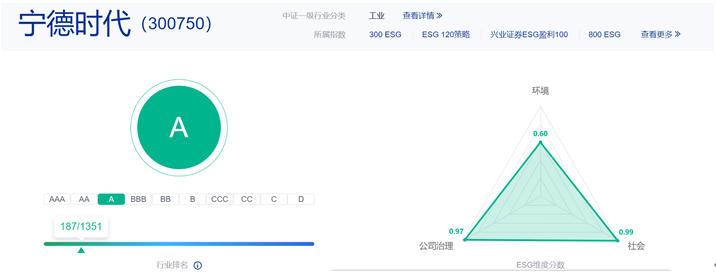⑧ 商道融绿，提供 ESG数据、ESG评级、ESG咨询服务，覆盖范围沪深300、中证800成分上市公司800家非公开债券发行人。
5.2.1.4 ESG时事新闻
点击“more”跳转到相关内容。
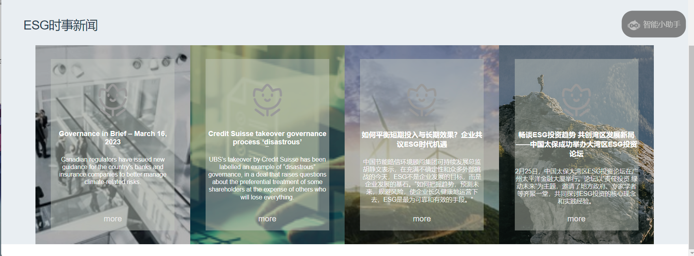 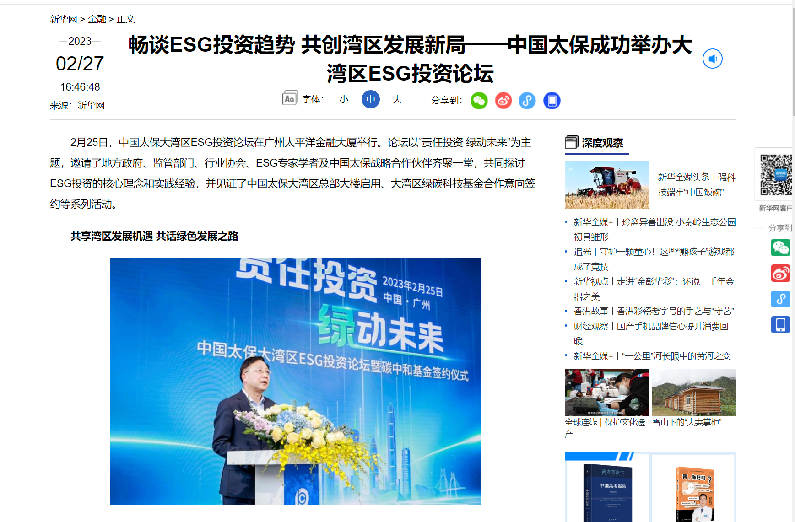5.2.2 ESG本地宝
导航栏点击ESG本地宝，进入项目介绍页面。该页面给出了本项目的评级体系介绍。ESG本地宝是一款综合性的ESG投资平台，提供ESG主流指标查询、修正ESG指标查询、因子模型构建和个性化投资组合管理等多种功能。通过加权平均得出各企业的ESG综合得分，采用自然语言处理技术评判企业对环境治理、脱贫攻坚等的贡献，综合评级体系反映企业的ESG表现。同时，平台提供ESG因素的四因子模型、ESG本地宝指数等功能，为投资者提供全面的投资建议。
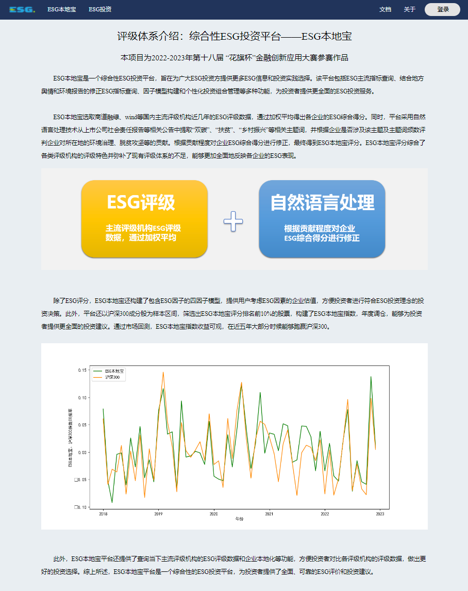5.2.3 ESG投资
ESG投资页面提供了pdf分析模块。通过导入pdf，输入pdf名称就可以完成对输入的pdf进行词库分析，平均每个pdf需要五分钟左右的时间。
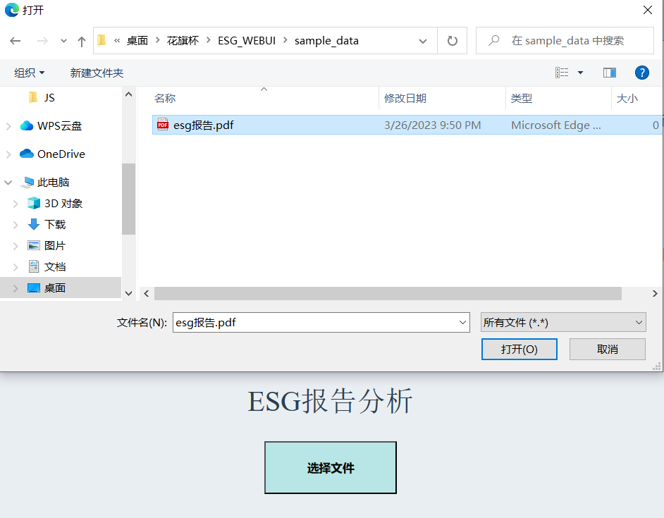根据LDA主题降维模型，将文档集中每篇文档的主题以概率分布的形式给出，从而通过分析一些文档抽取出它们的主题分布后，便可以根据主题分布进行主题聚类或文本分类。
生成结果如下：
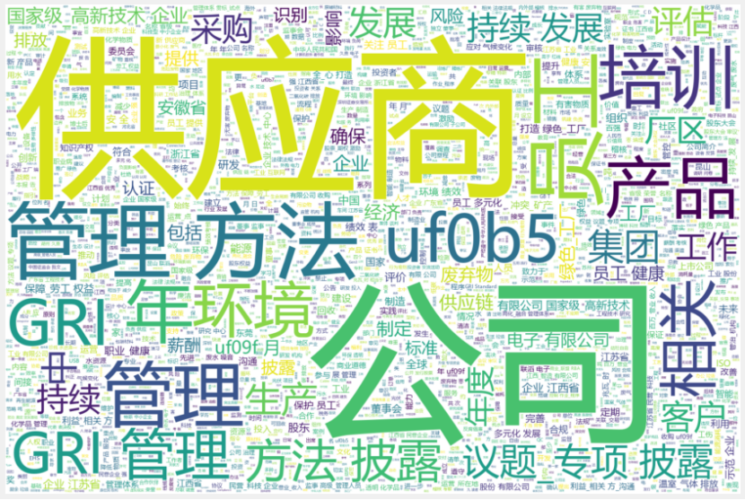 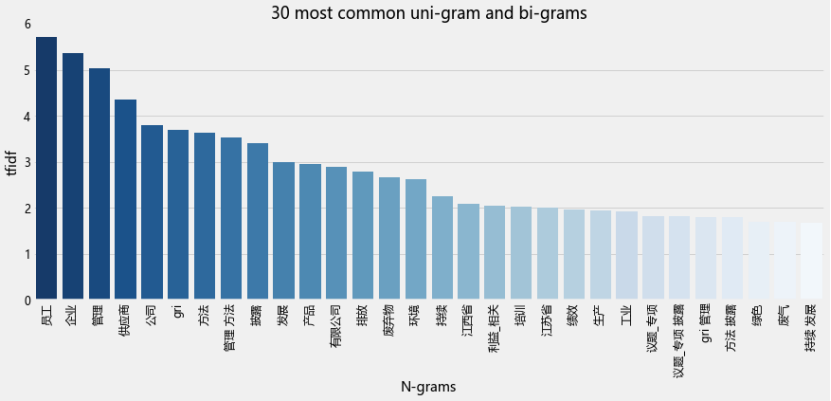模型构建的模型组成比例，体现了各个主题的关键词。在本例中，以“双碳”，“扶贫”，“乡村振兴”三个关键词的词义聚类图如下：
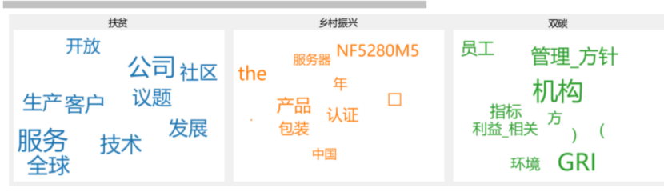该算法构建“双碳”，“扶贫”，“乡村振兴”的主题词库，计算该词库与CSR报告词库的Jaccard相似度，并以Jaccard_similarity*100+原ESG scores= 修正ESG scores重新修正。
5.2.4 团队介绍
导航栏点击关于，进入团队介绍页面。
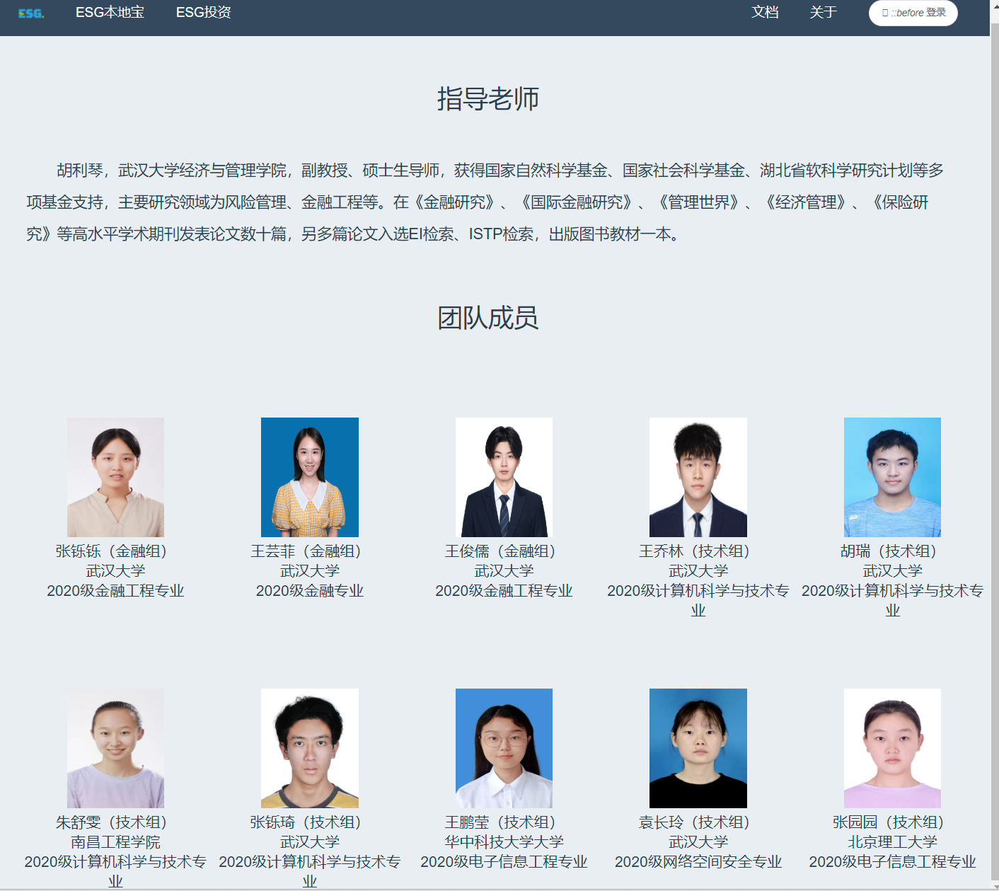6 可执行文件演示
6.1. 可执行文件
6.1.1. 前端代码
用户可以点击首页页顶导航中的栏目进入下一级页面：
1. 点击 Logo 会返回首页；
2. 点击“关于”，用户可以查看项目介绍和团队介绍等信息；
3. 点击“登录”，用户输入注册时的邮箱和密码，而后登录；用户也可以在这个页面跳转到注册账号和找回密码页面。
4. 首页下拉，查看评分体系与时事新闻、ESG评级的网站、ESG相关的网站。
5. 点击位于首页右边的小助手，即可与 OpenAI 的 chatGTP 进行对话。
6.1.2. 后端代码
6.1.2.1 数据库开发
后端使用IDEA专业版作为开发环境，基于springboot MySQL和MyBatis开发。此外，采用开源数据库管理软件DBeaver实现对数据的高效管理；采用Postman进行接口测试。
数据库的配置主要流程如下：
1. 克隆项目代码。
2. 将项目导入IDEA中，并通过MAVEN导包。
3. 配置MySQL环境，并在数据库springboot下建表。
4. 检查文件src/main/resources/application.yaml中用户名，密码，url是否正确。
5. 运行项目，进入登录页面。
6.2 演示
演示部分可参考用户手册。